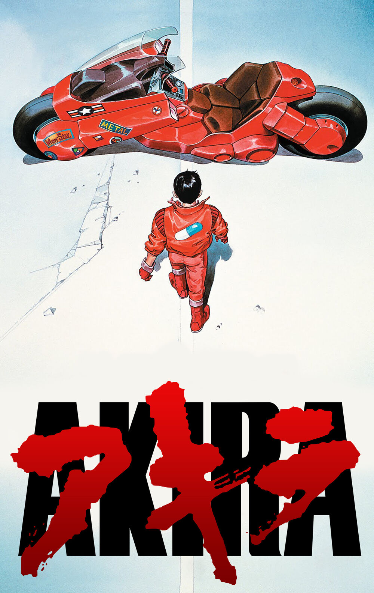

Aaron Taylor-Johnson como Dave Lizewski / Kick-Ass
Chloë Grace Moretz como Mindy Macready / Hit-Gir
Nicolas Cage como Damon Macready / Big Daddy
Christopher Mintz-Plasse como Chris D'Amico / Red Mist
Garrett M. Brown como Sr. Lizewski
O filme conta a vida de um adolescente normal, chamado Dave Lizewski, que decide tornar-se um super-
herói por influência das histórias em quadrinhos. Torna-se conhecido na mídia como "Kick-Ass", e motiva
o surgimento de uma nova onda de super-heróis no país, assim inclui-se Red Mist, que se torna seu "parceiro"
no combate ao crime, o misterioso Big Daddy e sua filha Hit-Girl, que vivem um eletrizante dia-a-dia matando
mafiosos. Porém, quando Frank D'Amico arma uma armadilha para os heróis, Kick-Ass deve provar que não são precisos
poderes para ser um super-herói de verdade.
Terminator 2
Elenco:
Arnold Schwarzenegger como Exterminador Modelo 101
Arnold Schwarzenegger como Exterminador Modelo 101
Edward Furlong como John Connor
Robert Patrick como Modelo T-1000
Joe Morton como Miles Dyson
O jovem John Connor é a chave para a vitória da civilização sobre uma rebelião de robôs do futuro.
No entanto, ele torna-se alvo de T-1000, um exterminador que pode assumir a forma que desejar e que
foi enviado do futuro para matá-lo. Outro exterminador, o renovado T-800, também é enviado de volta
ao passado para proteger o menino. Quando John e sua mãe embarcam na fuga com T-800, o menino cria um
vínculo forte e inesperado com o robô.
Never Back Down
Elenco:
Sean Faris como Jake Tyler
Cam Gigandet como Ryan McCarthy
Amber Heard como Baja Miller
Evan Peters como Max Cooperman
Djimon Hounsou como Jean Roqua
Jake muda-se para Orlando, na Flórida, com sua mãe e o irmão. Ele se sente como um estranho
em sua nova escola e frequentemente tem um temperamento fora de controle. Jake quer se encaixar
no novo ambiente e decide ir a uma festa com seu colega Baja. Lá, Jake é colocado em uma briga
e humilhado. Ao ver o que aconteceu com Jake, outro colega o incentiva a visitar o treinador de
artes marciais Jean Roqua.
The Lord of the Rings: The Return of the King
Elenco:
Elijah Wood como Frodo Baggins
Sean Astin como Samwise Gamgee
Ian McKellen como Gandalf
Viggo Mortensen como Aragorn
Orlando Bloom como Legolas
Sauron planeja um grande ataque a Minas Tirith, capital de Gondor, o que faz com que Gandalf
e Pippin partam para o local na intenção de ajudar a resistência.
Frodo, Sam e Gollum seguem sua viagem rumo à Montanha da Perdição para destruir o anel.
jin-roh: The wolf brigade
Elenco:
Sumi Mutoh como Kei Amemiya
Yoshikazu Fujiki como Kazuki Fuse
Eri Sendai como Nanami Agawa
Hiroyuki Kinosha como Atsuhi Henmi
Kenji Nakagawa como Isao Aniya
Em um Japão hipoteticamente ocupado pela Alemanha nazista após a Segunda Guerra Mundial, grupos armados anti-governamentais lutam ferozmente por mudanças nas opressoras políticas sociais em vigor.
Buscando evitar o uso das Forças Armadas ainda em processo de reorganização e tentando impedir uma ascensão exagerada do poder policial dentro da política, o governo resolveu criar uma terceira organização, fortemente armada e extremamente versátil. Seu nome: Organização Policial da Capital ou CAPO.
Durante uma das revoltas contra o governo, Fuse Kazuki (membro das Unidades especiais da CAPO) encontra uma "Chapéuzinho Vermelho". A partir daí, tudo em que o policial acreditava e confiava vai mudar drasticamente.
Alien
Elenco:
Sigourney Weaver como Ripley
Yaphet Kotto como Parker
Bolaji Badejo como Alien
Eddie Powell (I) como Alien
Harry Dean Stanton como Brett
Nave espacial, ao retornar para a Terra, recebe estranhos sinais vindos de um asteroide. Ao investigarem o local,
um dos tripulantes é atacado por um estranho ser. O que parecia ser um ataque isolado se transforma em um terror
constante, pois o tripulante atacado levou para dentro da nave o embrião de um alienígena, que não para de crescer e tem como meta matar toda a tripulação.
Akira

Elenco:
Fukue Itō como Kiyoko (Nº 25)
Hiroshi Ôtake (II) como Nezu
Kazuhiro Kamifuji como Masaru (Nº 27)
Kazumi Tanaka como Exército
Kôichi Kitamura como Miyako
Uma grande explosão fez com que Tóquio fosse destruída em 1988.
Em seu lugar foi construída Neo Tóquio, que, em 2019, sofre com
atentados terroristas por toda a cidade. Kaneda e Tetsuo são amigos
que integram uma gangue de motoqueiros. Eles disputam rachas violentos
com uma gangue rival, os Palhaços, até que um dia Tetsuo encontra Takashi,
uma estranha criança com poderes que fugiu do hospital onde era mantido como
cobaia. Tetsuo é ferido no encontro e antes de receber a ajuda dos amigos
é levado por integrantes do exército, liderados pelo coronel Shikishima.
A partir de então Tetsuo passa a desenvolver poderes inimagináveis, o que faz com que seja comparado ao lendário Akira, responsável pela explosão de 1988. Paralelamente, Kaneda se interessa por Kei, uma garota envolvida com espiões que tenta decifrar o enigma por trás das cobaias controladas pelo exército.
Shrek 2
Elenco:
Antonio Banderas como Puss In Boots
Cameron Diaz como Princess Fiona
Eddie Murphy como Donkey
Mike Myers como Shrek
Jennifer Saunders Fairy Godmother
Após se casar com a Princesa Fiona (Cameron Diaz), Shrek (Mike Myers) vive feliz em seu pântano.
Ao retornar de sua lua-de-mel Fiona recebe uma carta de seus pais, que não sabem que ela agora é
um ogro, convidando-a para um jantar juntamente com seu grande amor, na intenção de conhecê-lo.
A muito custo Fiona consegue convencer Shrek a ir visitá-los, tendo ainda a companhia do Burro
(Eddie Murphy). Porém os problemas começam quando os pais de Fiona descobrem que ela não se casou
com o Príncipe (Rupert Everett), a quem havia sido prometida, e enviam o Gato de Botas (Antonio Banderas)
para separá-los.